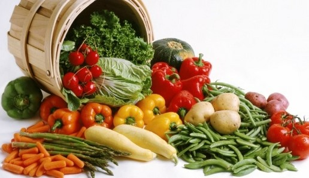
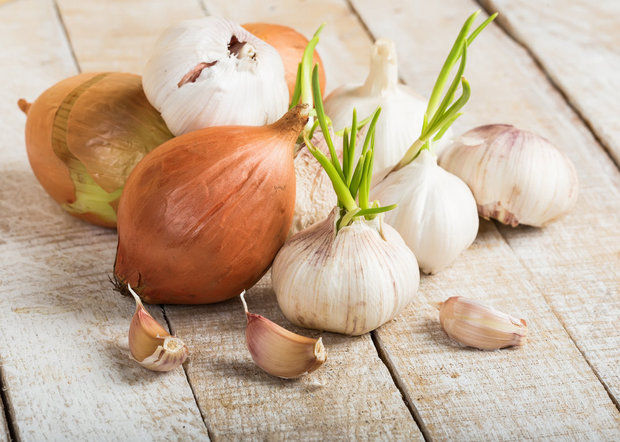
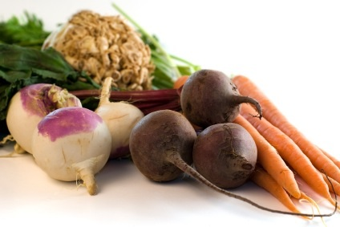
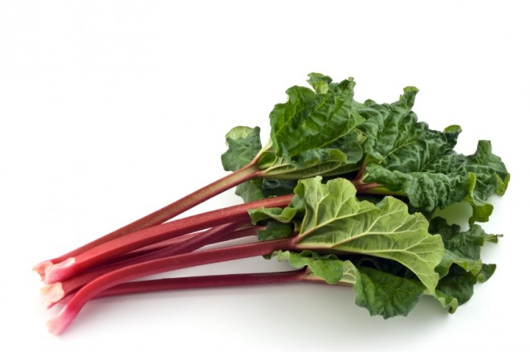
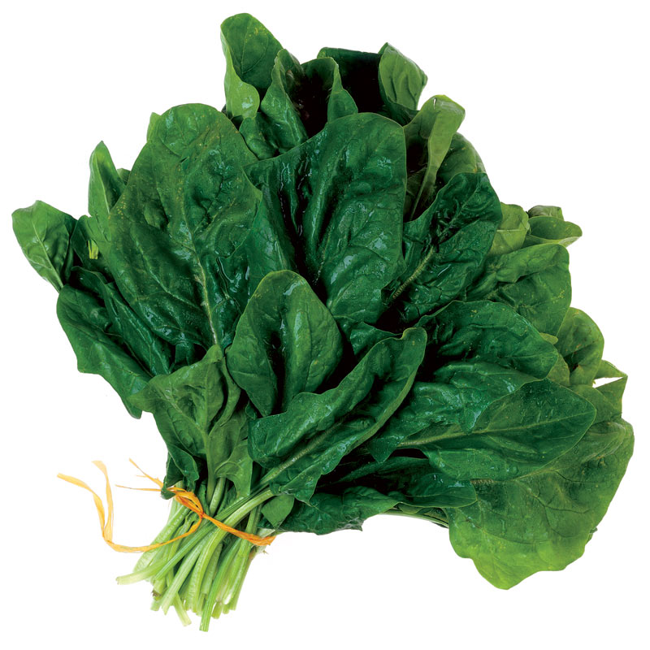
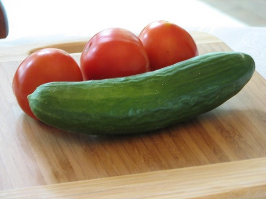
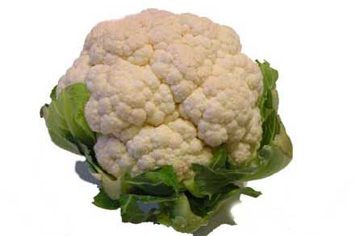

<div id="page" class="main-container "style="background-color: #f3ffe6;">
  <div id="main-content">
      <div id="sub-header" class="layout-full">
          <div class="meta-header " >
                      <div class="limit-wrapper vamtam-box-outer-padding">
                  <div class="header1">
                      <header class="page-header layout-center-align " data-progressive-animation="page-title">
                          <h1  itemprop="headline"><strong>Classification of Veggies</strong></h1>
                      </header>
                  </div>
              </div>
          </div>
      </div>
      <div class="vamtam-responsive-wrapper image-loaded" style="background-color: #f3ffe6;">
              
      </div>
      <div class="post-content the-content the-content-parent" style="background-color: #f3ffe6; ">
          <div class="page-content">
                  <h3>Vegetables are classified according to which part of the plant is eaten. Some vegetables fit into more than one category when several different parts of the plant are edible, e.g. both the roots and leaves of beetroot can be eaten.
                  </h3>
                  <h2><b>NOTE: You can buy vegetable seeds online from the GreenMyLife store – for delivery anywhere in India !</b></h2>

                  <h3>Vegetables are classified according to which part of the plant is eaten. Some vegetables fit into more than one category when several different parts of the plant are edible, e.g. both the roots and leaves of beetroot can be eaten. The following groups of vegetables are made according to these classifications:</h3>
                  <br>
                  <h2><strong>Bulbs</strong></h2>
                  <h3><em>Onion, Garlic, Leek</em>

                  </h3>


                  
                  <br>
                  <h3> Bulb vegetables are structured in the shape of a bulb, wherein all its nutrients are stored. These vegetables that are not eaten directly on their own, rather, they are used in food dishes to enhance the flavor of the food. The nutrients provided by these vegetables are immense as they are believed to be essential to gain healthy skin and eyes, and also for the proper functioning of the central nervous system.</h3>
                      <h3>While onion is called the magic bulb, garlic is often referred to as the wonder drug. Since ancient times, bulb vegetables are used as medicines because of their quality of curing diseases like high blood pressure and even prevention of cancer.
                      </h3>
                  <h2><strong>Root and Tubers</strong></h2>
              <h3>

                  <em>Carrot, Radish, Turnip, Beets, Potato, Sweet potato</em>

              </h3>

                  
              <h3>Root vegetables are those that are grown under the soil and possess nutrients that they gain from the soil. This can be a slightly confusing category because some bulb vegetables like garlic and ginger, and even some stem vegetables are considered to be root vegetables simply because they possess the characteristics of root vegetables.
              </h3>
                  <h3>Root vegetables are a great source of proteins, carbohydrates,
                       and are very low in fats. The calorie content in root vegetables is absolutely
                        nil and this makes it all the more attractive to people who are on a weight loss diet.
                         Along with the nutritional benefits, another advantage of root vegetables is that they have medicinal properties too.
                          Consumption of root vegetables is an effective way of treating problems in the digestive tract, morning sickness, arthritis, high cholesterol, etc.
                           They are also essential for healthy eyes and good looking skin.</h3>
                  <h2>
                      <strong>Stem</strong>
                  </h2>
                  <h3>
                  <em>Asparagus, Kohlrabi, Rhubarb </em>
                  </h3>
                  
                  <h3>Stem vegetables are those that have shoots or stalks which can be consumed. These vegetables can be used to make a variety of dishes and are usually served with pasta, sandwiches, soups, etc. Along with being delicious, stem vegetables possess minerals, vitamins and antioxidants.
                  </h3>
                  <h2>
                      <strong>Leaf</strong>
                  </h2>
                  <h3>
                      <em>Cabbage, Kale, Lettuce, Spinach</em>
                  </h3>
                  
                  <h3>Leaf vegetables are plant leaves eaten as vegetables. Sometimes they are accompanied by petioles and shoots. These vegetables include a whole lot of vitamins that are required to remain fit and also to prevent some diseases and health problems.
                  </h3>
                  <h3>Leaf vegetables contain potassium, iron, magnesium, calcium, folic acid and certain phyto-chemicals that are important for the proper functioning of the body.
                      Consuming green leafy vegetables everyday decreases the risk of diseases like high blood pressure, diabetes, cancer, heart diseases, etc.
                      Leaf vegetables are beneficial for having a good eye sight, healthy looking skin and also to control weight gain.</h3>
                  <h2>
                      <strong>Fruits</strong>
                  </h2>
                  <h3>
                      <em>Egg plant, Capsicum, Tomato, Pumpkin, Cucumber, Fuzzy melon, Muskmelon</em>
                  </h3>
                  
                  <h3>Fruit vegetables are so called because botanically they fulfill the definition of fruits,
                       but are used as vegetables by human beings. They are considered to be fruits because in the scientific sense of the term, fruits are those that carry the seeds of the plant.</h3>
                  <h3>
                      <strong>Flower</strong>
                  </h3>
                  <h3>
                      <em>Cauliflower, Broccoli, Broccoflower </em>
                  </h3>
                  
                  <h3>Flowering vegetables are so called because they have the shape of flowers. They are usually small in size and appear like many flower buds clustered together. Along with essential nutrients, flowering vegetables also bear some phyto-chemicals called as ‘isothiocyanates’ which help in preventing the production of cancerous cells. For this reason, these vegetables are called functional vegetables.
                  </h3>
                  <h2>
                      <strong>Seeds</strong>
                  </h2>
                  <h3>
                      <em>Pea, Soybeans, French bean </em>
                  </h3>
                  
                  <h3>Also called Podded vegetables. They are cool season crop grown in many parts of the country. The podded vegetable may be used fresh,
                      in salads, frozen, as a snack or canned, ready for those winter meals.            </h3>
                  <h3>Podded vegetables are a rich source of proteins which help in providing the
                       energy and strength required to carry out daily activities. They also contain potassium, folic acid,
                        complex carbohydrates, magnesium, iron, fiber and zinc.

                  </h3>
              </div>
          </div>
      </div>
  </div>
